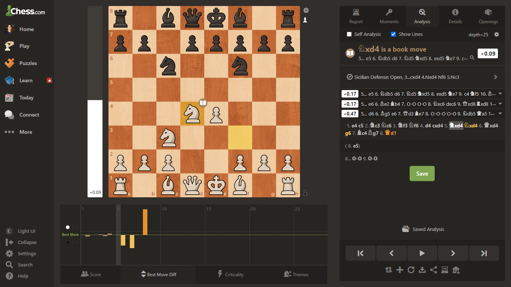

Explorando a lógica por trás de computadores que jogam Xadrez e como programar uma chess engine (Um bot que joga Xadrez).
Se você curte Xadrez, você provavelmente já jogou contra uma chess engine - um computador que joga Xadrez. E se você jogou contra os níveis mais avançados do computador, você provavelmente perdeu. Mas você já se perguntou como os computadores conseguem jogar um jogo tão complexo quanto o xadrez? E como eles conseguem ser tão bons?
Nesse artigo a gente vai explorar a lógica por trás de computadores que jogam Xadrez e vamos montar nosso próprio robô, o Atlas.
Durante o artigo você vai encontrar algumas seções intituladas "no código". O motivo disso é pra que o texto seja acessível tanto para quem sabe programar e quer montar sua própria engine, quanto pra quem não sabe, mas curte matemática e lógica e quer entender como funcionam as chess engines.
O código que você encontrar aqui vai ser escrito em javascript, mas a lógica é a mesma pra qualquer linguagem e não é difícil adaptar o código pra python, por exemplo.
O primeiro passo para jogar qualquer jogo é aprender as regras. Se você chegou até aqui, eu imagino que você já tem uma boa ideia de como funciona o Xadrez. Mas infelizmente nosso computador não entende as regras da mesma maneira que a gente e o primeiro passo, então, é ensinar ao computador como funciona o tabuleiro e quais movimentos ele pode fazer. Isso inclui gerar o tabuleiro, listar as peças e suas posições e definir pra cada peça, quais os movimentos que ela pode fazer. Além disso, o programa precisa identificar quando o jogo chegar ao fim, seja por empate, por cheque mate, ou por desistência. E o computador precisa lembrar de quem é a vez de jogar.
Para os propósitos desse artigo, nos vamos partir de um tabuleiro como o abaixo, em que as peças podem se mover livremente e o computador reconhece o movimento de cada peça.
Para criar um tabuleiro como o tabuleiro acima, detectar cheques e empates, e gerar os movimentos legais, a gente vai usar uma library chamada chess.js. E para gerar a interface gráfica vamos usar a chessboard.js. É sempre possível programar essa parte por conta própria também, mas para esse artigo nos vamos focar na parte da tomada de decisões.
Agora que nós temos um tabuleiro completamente funcional, é hora da parte lógica, e essa é, sem dúvidas, a parte mais interessante. A essência de ensinar um computador a jogar Xadrez (e na verdade, qualquer jogo) é ensinar o computador a escolher as melhores jogadas. E pra escolher a melhor jogada, primeiro a gente tem que saber quais são as nossas opções. Então o primeiro passo é justamente determinar, quais são as jogadas possíveis a partir de um tabuleiro qualquer.